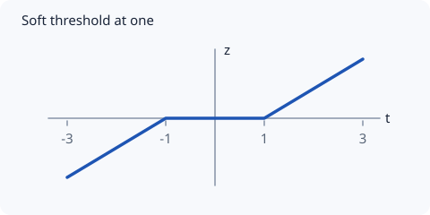
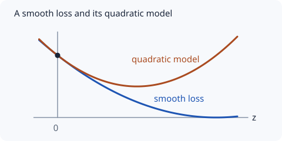
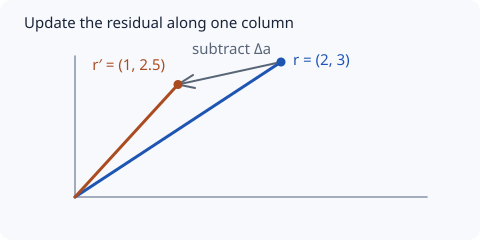
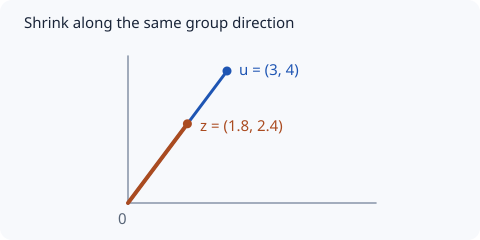

Proximal operations by hand
Start with the first lasso problem. These exercises use small finite inputs so you can compute the answer before calling an oracle.
Soft threshold a scalar
Minimize $\frac12(z-t)^2+\tau|z|$ for $\tau\geq0$. For $z>0$, the stationarity equation gives $z=t-\tau$. For $z<0$, it gives $z=t+\tau$. At $z=0$, stationarity is possible when $t\in[-\tau,\tau]$. Putting the three cases together gives $\operatorname{sign}(t)\max(|t|-\tau,0)$.

Compute the results at $t=-3,-1,0,1,2$ with $\tau=1$. Check them with the NormL1 proximal operator.
using ProximalBase
t = [-3.0, -1.0, 0.0, 1.0, 2.0]
z = prox(NormL1(1.0), t, 1.0)
@assert z == [-2.0, 0.0, 0.0, 0.0, 1.0]
z5-element Vector{Float64}:
-2.0
0.0
0.0
0.0
1.0Take a proximal-gradient step
Let $f(x)=(x-3)^2/4$ and $g(x)=|x|/2$. At $x=0$ and $\gamma=1$, the smooth quadratic model is $f(0)+f'(0)z+z^2/2$. For this loss, the difference between the model and $f(z)$ is $z^2/4$. Completing the square puts the model center at $-\gamma f'(0)=1.5$. The penalty threshold is $\gamma/2=0.5$.

Predict the next iterate and compare the objective at the two iterates. See gradient mapping and optimality for the interpretation of the step.
using ProximalBase
loss(x) = (x - 3)^2 / 4
objective(x) = loss(x) + abs(x) / 2
x = 0.0
gradient = (x - 3) / 2
next = only(prox(NormL1(0.5), [x - gradient], 1.0))
@assert next == 1.0
@assert objective(next) == 1.5 < objective(x) == 2.25
next1.0Update a least-squares residual
For one column $a$ of the design, write the current residual as $r=y-X\beta$. After changing coefficient $\beta_j$ by $\Delta$, the residual is $r-\Delta a$. The one-coordinate objective has smooth curvature $a^\mathsf{T}a$ and derivative $-a^\mathsf{T}r$ at the current coefficient. Use these in the scalar step from the previous exercise.

Take $a=(1,1/2)$, $r=(2,3)$, $\beta_j=0$ and $\lambda=9/4$. The proposed positive coefficient $1$ leaves residual $(1,5/2)$. Check that its column inner product equals $\lambda$, the stationarity condition for a positive coefficient. See least squares and residual updates.
using ProximalBase, LinearAlgebra
a = [1.0, 0.5]
r = [2.0, 3.0]
λ = 2.25
γ = inv(dot(a, a))
β = only(prox(NormL1(λ), [γ * dot(a, r)], γ))
updated = r - β * a
@assert β ≈ 1.0
@assert updated ≈ [1.0, 2.5]
@assert dot(a, updated) ≈ λ
updated2-element Vector{Float64}:
0.9999999999999998
2.5Shrink a whole group
For $u\ne0$ and $\tau\geq0$, consider $\frac12\lVert z-u\rVert_2^2+\tau\lVert z\rVert_2$. Holding $\lVert z\rVert_2=r$ fixed, the distance is minimized along the direction of $u$ by Cauchy–Schwarz. Minimizing over $r\geq0$ gives $r=\max(\lVert u\rVert_2-\tau,0)$.

With $u=(3,4)$ and $\tau=2$, predict the output length and check the stationarity equation $u-z=\tau z/\lVert z\rVert_2$. See the group norm guide for weights and several groups.
using ProximalBase, LinearAlgebra
u = [3.0, 4.0]
z = prox(GroupNormL2(2.0, [1:2], [1.0]), u, 1.0)
@assert norm(z) ≈ 3.0
@assert z ≈ [1.8, 2.4]
@assert u - z ≈ 2 * z / norm(z)
z2-element Vector{Float64}:
1.7999999999999998
2.4